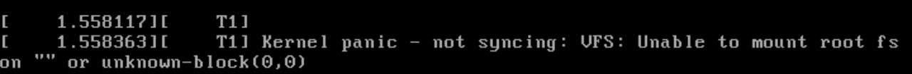
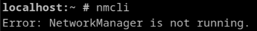

container-snap
Atomic Updates from OCI Images using Podman’s Btrfs Driver
who -u
Dan Čermák
| Fullstack Developer @SUSE | |
| i3 SIG, Package maintainer | |
| Developer Tools, Testing and Documentation, Home Automation | |
| https://dancermak.name | |
| dcermak | |
| @Defolos@mastodon.social |
Atomic Updates
Updates applied fully or not at all
Bootable Containers
deploy an OS from OCI images
But why 🤔
We all know how to build a container
Boot from OCI Images
openSUSE's tukit

podman's btrfs storage driver

container-snap
Demo
Challenges



- long debug & test cycles
tukitis very snapper & openSUSE specific- bootloaders are weird
What's left?
- actual testing & usage
- proper
/etc/handling (👉️dcermak/bindicate) - better UX
- proper kernel & bootloader update handling
- real image builder support
- finish support in
tukit - garbage collection
Go to dcermak/container-snap and give it a try!